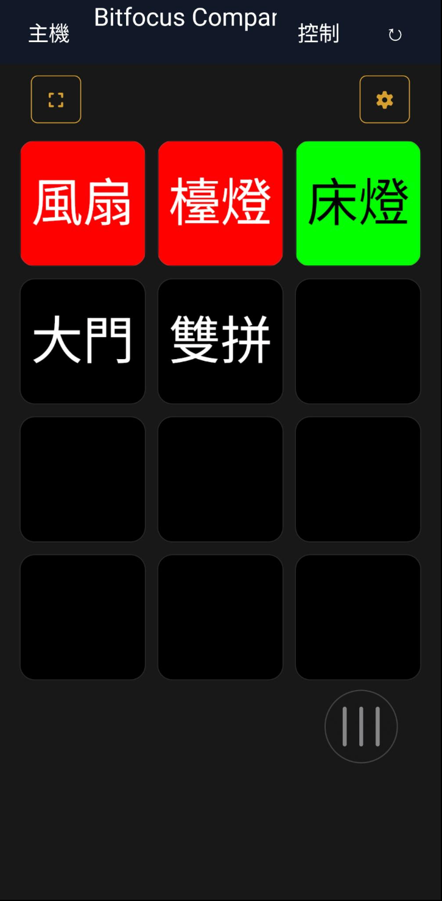

不使用 Companion HTTP 按鈕 API，支援按下、狀態與按鈕畫面。
一個 App，連接所有 Companion 主機
Wi‑Fi 優先使用區網；無法連線時自動改走 Cloudflare 網際網路網址。
1×1、3×2、4×4、旋鈕，以及最後一列旋鈕的混合面板。
可建立多顆永遠置頂的 1×1 Satellite 旋鈕，即時顯示按鈕畫面並自由移動。
每個控制項與小工具可選擇不同主機，並支援 CSV 批次匯入與匯出。

ANDROID
即時、清晰、直接控制
Android 版本提供常駐 Satellite 同步、通知欄快速控制、自訂 PNG 圖示，以及完整的主畫面小工具。
下載 Companion Satellite Mobile
Android
Android 8.0 以上。下載 APK 後允許瀏覽器安裝未知來源 App。
下載 APK · v2.31.0iPhone / iOS
目前提供完整原始碼。Personal Team 簽署無法公開散布安裝檔，請使用 Xcode 與自己的 Apple ID 安裝。
iOS 安裝說明